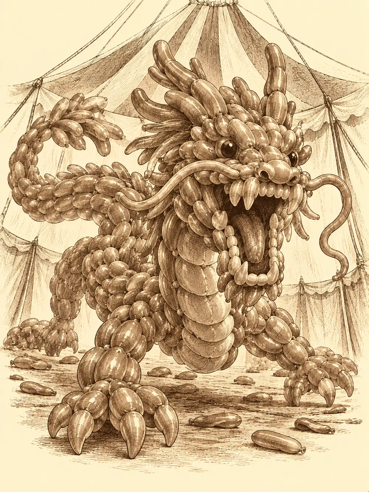

Capítulo 122
Pide un deseo
Libro VIII · El hilo maldito
Gur le lanzó el hacha a Gluglu y se la clavó en mitad de la frente. El hombre pez, que ya no estaba vivo del todo desde hacía tiempo, se quedó mirando al frente con el arma colgando como un adorno de feria.
"¿Ves? No es tan difícil", le dijo el medio orco a Banzo. "Hasta Gluglu la coge, y a ti se te cae".
Era su nuevo entrenamiento: uno lanzaba el arma y el otro la recogía al vuelo y la devolvía. Banzo lo intentó con la espada, casi sin mirar, y la hoja se clavó a dos dedos del pie de Gluglu, que se volvió muy despacio a mirarla y soltó la única palabra que le quedaba, un gorgoteo húmedo que sonaba a su propio nombre. Shizuka arrastraba por el suelo el martillo de Gur, que pesaba más que ella.
Al fondo, en la habitación que antes usaba Gelbreak, Kurobane seguía atado, aunque quien ocupaba aquel cuerpo ya no era Kurobane. Banzo había pasado la tarde intentando convencer a la sombra de que colaborara con el muchacho, y ella, desde dentro, se había dedicado a reírse del chico encerrado.
Calista y Gelbreak entraron hablando. La emisaria vio las armas volando por la sala y decidió que aquello ya le parecía normal. Preguntó si alguien había salido aquel día: llovían regalos del cielo y la gente andaba por las calles con ropas extrañas, comportándose de manera aún más extraña. Nadie había salido. Gelbreak sacó sus herramientas de ladrón con intención de cerrar la puerta del prisionero, y ella le pidió que la dejara abierta para poder vigilarlo.
"Danifae ha estado aquí", le contó Banzo. "Se ha tirado un buen rato hablando con él".
"Eso no me gusta".
"Hemos tenido una conversación muy grata", dijo una voz desde el fondo.
Gelbreak entró, se inclinó sobre el prisionero y le habló al oído.
"¿Recuerdas que destruí esa estatua? Pues recuerda que estás en un cuerpo mortal". Le apoyó la punta del estoque en el cuello. "Si pincho, te mueres. Así que relájate un poquito".
"Estoy relajado". Y lo estaba, de una manera inquietante.
"Vigila de quién te fías. A veces las arañas pican. Lo sé por experiencia".
Banzo les explicó lo que había hablado con la sombra: al destruir la estatua, sus destinos habían quedado atados; si moría uno, moría el otro. Y les contó la idea de Danifae. Un contrato de cazador con cláusulas especiales, vinculado por magia, para asegurarse de que no hubiera traición. Gelbreak dijo que aquello era cosa suya, porque él no era cazador. Calista se sentó a redactarlo.
Osuray la observó mientras escribía y le insinuó que ahora conocía un secreto que ella y el drow compartían. Calista no levantó la cabeza del papel. Corrigió los singulares por plurales, porque el contrato era para dos, y se lo tendió con la pluma.
"Tiene unas cláusulas especiales. Ni tú ni el verdadero dueño de ese cuerpo podéis herir ni matar a los civiles ni a ningún cazador. No podéis ocultar información importante sobre Otakemaru, ni sobre tu origen. Y un par de reglas más". Le encendió la mano de un brillo morado. "¿Quieres ser libre o quieres seguir encadenado lo que le quede de vida a ese pobre cuerpo?".
"Seguro que no habrá secretos entre nosotros", dijo él.
Firmó mirándola a los ojos, y Calista sintió que el abismo le devolvía la mirada. Banzo sacó la llave que le había dado Guxi y le quitó los grilletes. El contrato regulaba lo que la sombra podía hacer. No devolvía a Kurobane el mando de nada.
En las calles de Sho había regalos por todas partes, unos abiertos y otros sin abrir, envueltos en papel manchado de pintura. La gente iba disfrazada haciendo payasadas, y en mitad de la crisis aquello parecía un respiro. Cada paquete llevaba la misma etiqueta: Nos vemos en el circo, donde todos vuestros deseos se harán realidad. Atentamente, Dame Le Blanc.
Gelbreak abrió uno, recibió una ráfaga de confeti en la cara sin pestañear y sacó un traje de bufón de muchos colores que, sin saber por qué, le susurraba que se lo probara. Gur, que había decidido hacer exactamente lo que hiciera el drow, le dio un mordisco al suyo creyendo que el confeti se comía. Se le quedó un trozo rojo entre los dientes. Dentro había unas ropas llamativas y se las puso al martillo. La tela se ajustó como un guante, y el martillo quedó con aspecto de abuelo cascarrabias. Gur lo bautizó Aurelio.
Banzo se probó un vestido. En cuanto se lo puso sintió que se le pegaba a la piel; los rasgos se le suavizaron, el cuerpo cambió y donde antes había un goliat con armadura había ahora una mujer enorme con un vestido que le ocultaba el acero. Intentó rasgarse la falda para enseñar algo de pierna y fue como arrancarse la propia piel. Caminaba abierto de piernas, tambaleándose sobre unos tacones que no había pedido, colocándose la tela cada pocos pasos. Calista y Osuray miraron sus regalos y los dejaron en el suelo sin abrir.
La carpa los recibió con luces de colores. Una voz dulce resonaba por toda la lona invitando al público a acercarse a los artistas y a disfrutar de las actividades antes del espectáculo. Los atendió una domadora de cuatro brazos con un látigo para fieras en una mano.
Gur fue derecho al gorila, que hacía poses de forzudo junto a un cañón enorme, y se puso a imitarlo músculo por músculo. Banzo se asomó a mirar dentro del cañón y acabó metido en él. Salió disparado, subió hasta lo más alto de la carpa y empezó a caer. Abajo, dos artistas arrastraban un cojín gigante a toda prisa intentando calcular dónde aterrizaría; Banzo cerró los ojos con fuerza, cayó de pie sobre él y abrió los brazos. El público aplaudió. Los dos artistas resoplaron aliviados: ya tenían varias denuncias por culpa del gorila.
Gur se quedó en el centro de la pista ganándose al público. Cuando vinieron a echarlo, agarró al primero y lo lanzó a un lado, y al segundo al otro, y la gente aplaudió todavía más; le estaba haciendo el trabajo gratis al circo. La presentadora se le acercó con un paquete rojo y él lo abrió de un mordisco. Otra ráfaga de confeti a presión, y ahora tenía trozos verdes, amarillos y azules entre los dientes.
"Vaya, la suerte no ha estado contigo esta vez. Quizá en el próximo regalo".
Gelbreak, por su parte, había huido hacia el fondo con Calista para que Gur no lo metiera en el cañón. Encontró una carpa llena de disfraces y se probó una mezcla de traje de animal y de bufón. Al mirarse al espejo sonrió: tenía un hocico alargado y peludo, dos orejas grandes, cola, gorrito de colores y una camisa de payaso con tirantes y lunares. Le gustó un instante. Luego intentó quitárselo y no pudo, y cuanto más tiraba más le dolía. Echó mano del estoque para cortarlo y Calista le sujetó la muñeca antes de que se abriera la piel con él.
Empezaron a sonar tambores. Los párpados les pesaron a todos a la vez, y cayeron.
Gelbreak estaba en una playa al atardecer. La arena le acariciaba los pies descalzos y la luz del sol, por una vez, no le hería los ojos. Una estrella bajó del cielo y se posó a pocos metros con un sonido de campanillas, y desde dentro una voz pronunció su nombre con una sonrisa que él conocía. Entonces se abrió detrás de ella un agujero negro que empezó a tragársela. La estrella se aferró a su mano. Él tiró, la arena cedió bajo sus pies, y en vez de soltarla se tiró con ella al pozo.

Cayeron en una oscuridad que se fue llenando de telarañas y de ojos. Quedó atrapado en los hilos. Se arrancó la red con las manos, deshizo el resto con magia, y vio surgir de la negrura una pata de araña más larga que nada que hubiera visto nunca. Los hilos no iban a por él. Iban a por la luz. La atraparon entre dos patas enormes y se oyó un grito de dolor. Gelbreak saltó hasta la criatura y le hundió el estoque en el pliegue de las patas, empujando hacia dentro. La araña aulló, pero la estrella ya estaba herida, y su luz se apagó. Él se plantó delante de la bestia y la retó a comérselo. Antes de que las mandíbulas lo alcanzaran, el suelo desapareció y volvió a caer, y oyó a su espalda una risa entre las sombras.
Gur estaba sentado en un trono de huesos de dragón contemplando su territorio. Medio orcos, hombres, mujeres y niños preparaban un festín. Detrás tenía a sus tres esposas y a sus hijos pequeños correteando, y entre la gente de su horda estaban los cazadores y los soldados con los que había peleado espalda contra espalda tantas veces que ya eran sus hermanos. Una de sus esposas se le acercó con un jabalí asado enorme.
"¿Quieres jabalí, cariño mío?".
Algo no encajaba. Las bocas de todos empezaron a moverse a la vez y a volverse hacia él, y las voces se le metieron en la cabeza como un enjambre: alguien decía no, alguien que no quería que aquello acabara, alguien que por fin salían de allí, alguien que lo llamaba cariñito. Venían hacia él despacio, y a cada paso las voces subían. Las cabezas empezaron a estallar una tras otra. Gur no levantó el martillo contra los suyos. Entendió que lo estaban manipulando, gritó que se callaran, y el trono se hundió con él en el vacío.
Kurobane estaba sentado en el umbral de una casa junto al mar. No era la sombra quien soñaba, sino él. Calista salía del agua con una sonrisa deslumbrante, alzándose como un zafiro sobre las olas, y le preguntaba qué le había dicho a alguien, apoyándose en la madera para acercarse.
"Esto no es real", dijo él, y se puso en pie con el estoque envainado en la mano. "Porque sé que él y tú tenéis algo".
La Calista del sueño retrocedió asustada hacia el agua. Kurobane la señaló con el arma y el brazo se le fue volviendo negro, pero esta vez la oscuridad no se detuvo en el hombro: siguió subiendo mientras hablaba, y la voz cambiaba con ella.
"Espero que lo que ella me dijo no sea cierto. Porque si lo es, te voy a odiar".
Los ojos rojos se le volvieron un pozo negro. La figura del mar lo miró con un terror que él nunca le había visto, susurró que ella quería corresponderle y se hundió. El sueño se rompió en pedazos y la oscuridad lo absorbió entero mientras caía.
Banzo estaba sentado a la cabecera de una mesa larga, con una jarra en la mano. Era su casa. La sala estaba llena de viejos amigos con más canas y menos batallas; Calista acunaba en su regazo a una niña pequeña, Sora, y le cantaba nanas, y Gelbreak gruñía a un niño travieso, Yel, que intentaba pincharlo con un palo. Gur comía sin parar. Rua servía a los invitados riendo como una mujer cualquiera, ya sin cargo y más feliz que nunca. Los dos niños le pidieron que contara otra vez la historia de las pruebas que había hecho con Gur.
Del techo cayó una sombra que se deshizo en polvo negro y volvió a juntarse en una figura que él conocía bien. Solo la veía él. Los demás seguían riendo.
"Todo esto es mentira", le dijo la sombra. "Es un sueño".
Banzo se levantó, se plantó delante de ella y le clavó lo primero que tuvo a mano. La figura no se defendió. El suelo desapareció y cayeron los dos.
En la oscuridad, cuatro cuerpos se vieron caer a la vez. Gelbreak, con la estrella apagada todavía en los ojos. Gur, que lo miró y decidió que aquello era cosa del drow, como siempre. Banzo. Y la sombra que llevaba el cuerpo de Kurobane.
Despertaron en el circo.
Dame Le Blanc los esperaba en el centro de la pista. Aplaudió.
"Ha sido divertidísimo ver lo que escondéis por dentro. Me habría gustado que os quedarais un poco más".
Se llevó una mano a la máscara, tiró hacia arriba y el disfraz entero desapareció. Debajo había una bufona. Gelbreak la reconoció.
"Koishi".
"No me he olvidado de mi viejo amigo", dijo ella. "Pero esta noche tú no eres el plato principal. Los grandullones y la sombra son el espectáculo de hoy. Combatid hasta que no podáis más".
Del techo cayó un dragón hecho de globos. Rebotó al tocar el suelo, los miró con unos ojos negros de goma y rugió, y el aliento olía dulzón. Gelbreak se encontró de pie sobre una cuerda floja a muchos metros de altura. Más arriba, Calista colgaba atada mientras unas criaturillas de globo prendían fuego a su cuerda. El drow chasqueó los dedos para usar su magia y la bufona se la deshizo en el aire.
"Quédate quietecito. No me fastidies la fiesta".
Abajo, Osuray y Banzo se lanzaron contra el dragón. La cola de globos golpeaba con descargas que ponían los pelos de punta, de la boca salían tartas que cegaban, y en un momento dado la criatura soltó un chiste tan malo que hacía falta voluntad para no caer al suelo de risa. Las armas rebotaban en la goma. Banzo trepó por el cuerpo resbaladizo hasta el lomo y, cuando ya no supo qué más hacer, se metió de cabeza por la garganta.
Gur, en cambio, no había despertado del todo. O eso creía.
"¡Me voy a salir de este sueño cueste lo que cueste!".
Destrozó a martillazos uno de los postes que sostenían las cuerdas, lanzó una bola de fuego hacia arriba que prendió otra cuerda y empezó a arrojarle jabalinas a Gelbreak, que colgaba indefenso, sin magia. Le dio. Le dio otra vez, y otra. Koishi comía palomitas.
"¡Gur, no estamos soñando!", le gritaba Calista desde arriba.
Calista consiguió alcanzarlo con su magia y lo dejó clavado en el sitio, y luego gastó lo que le quedaba en cerrarle a Gelbreak las heridas. En su celda dentro del cuerpo de Kurobane, el muchacho suplicaba que salvaran a Calista. Osuray lo rechazó con desprecio. Luego miró hacia arriba, a la cuerda que ardía, y aceptó.
Esto te saldrá muy caro.
Envolvió en oscuridad su propio cuerpo, saltó de sombra en sombra hasta la altura de la tritón, cortó sus ataduras y la bajó en brazos hasta el suelo, despacio, como si cayera una pluma. Luego volvió a saltar, alcanzó a Gelbreak y lo bajó también, con la magia de los demás sosteniéndolos en el último tramo.
Cuando los dos estuvieron a salvo, Koishi suspiró.
"Bueno. Se acabó la función".
El dragón se encogió hacia dentro y reventó en una lluvia de confeti, y la bufona desapareció con él. Nadie lo había matado; se lo había llevado ella. La carpa quedó vacía y los disfraces siguieron pegados donde estaban.
Gur no aceptó que hubiera terminado. Seguía convencido de estar dentro del sueño, y para él la salida pasaba por Gelbreak. Fue a por él otra vez. El drow lo miró a los ojos y, con aquella voz de sombra que usaba pocas veces, lo amenazó con contar a todo el mundo lo que había hecho una vez en su tribu, con su padre. Le suplicó que parara. Calista volvió a ordenarle con su magia que se calmara.
Gelbreak la cogió en brazos y desapareció con ella. Osuray ya se había marchado, tras despedirse con un "os veo en la base".
En la carpa vacía quedaron dos. Gur prendió fuego a la lona para acabar de una vez con aquella pesadilla, y Banzo, en lugar de huir, se quedó a su lado intentando arrastrarlo fuera. Hubo explosiones. Cuando el humo se despejó, los dos seguían vivos, negros de hollín, con el pelo chamuscado. La fuerza del estallido había reventado por fin el vestido de Banzo, que volvía a ser un goliat con armadura.
Al día siguiente, todavía oliendo a humo, Banzo y Gur llegaron a la herrería. El herrero estaba terminando de cargar su carro y los dos le subieron las últimas cajas, que les pesaron menos que a él. Les agradeció los músculos y los invitó a subir.
"Vamos a Ukio", dijo Banzo, acomodándose entre los fardos. "Hay que buscar al último del equipo bárbaro".
Gur se encaramó detrás de él, pero antes de que el carro arrancara se asomó al pescante.
"Oye, ¿has podido hacer algo con mi hacha? ¿O con la madera aquella del árbol de la playa?".